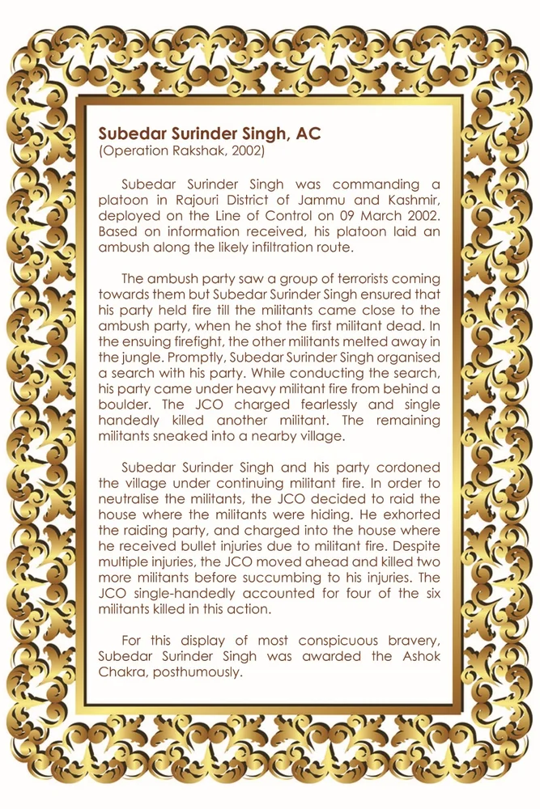

सूबेदार सुरिंदर सिंह, एसी
शीर्षक: Subedar Surinder Singh, AC
श्रेणी: हॉल ऑफ फेम
Award: अशोक चक्र
Era / Action: Operation Rakshak, 2002
सूबेदार सुरिंदर सिंह, एसी
उद्धरण (लिखित):
(ऑपरेशन रक्षक, 2002) सूबेदार सुरिंदर सिंह 09 मार्च 2002 को नियंत्रण रेखा पर तैनात जम्मू-कश्मीर के राजौरी जिले में एक प्लाटून की कमान संभाल रहे थे। प्राप्त जानकारी के आधार पर, उनकी प्लाटून ने संभावित घुसपैठ मार्ग पर घात लगाकर हमला किया। घात लगाकर बैठी पार्टी ने देखा कि आतंकवादियों का एक समूह उनकी ओर आ रहा है, लेकिन सूबेदार सुरिंदर सिंह ने यह सुनिश्चित किया कि उनकी पार्टी तब तक गोलीबारी करती रहे जब तक कि आतंकवादी घात लगाकर बैठी पार्टी के करीब नहीं आ गए, जब उन्होंने पहले आतंकवादी को मार गिराया। आगामी गोलीबारी में, अन्य आतंकवादी जंगल में छिप गए। तुरंत, सूबेदार सुरिंदर सिंह ने अपनी पार्टी के साथ एक खोज का आयोजन किया। खोज करते समय, उनकी पार्टी एक चट्टान के पीछे से भारी आतंकवादी गोलीबारी की चपेट में आ गई। जेसीओ ने निडर होकर हमला किया और अकेले ही एक अन्य आतंकवादी को मार गिराया। बचे हुए आतंकवादी पास के एक गाँव में घुस गए। सूबेदार सुरिंदर सिंह और उनकी पार्टी ने लगातार चल रही आतंकवादी गोलीबारी के तहत गाँव को घेर लिया। आतंकवादियों को मार गिराने के लिए जेसीओ ने उस घर पर छापा मारने का फैसला किया जहां आतंकवादी छिपे हुए थे। उन्होंने छापा मारने वाली पार्टी को प्रोत्साहित किया और उस घर में घुस गए जहां आतंकवादियों की गोलीबारी में वह घायल हो गए। कई चोटों के बावजूद, जेसीओ आगे बढ़े और दम तोड़ने से पहले दो और आतंकवादियों को मार गिराया। इस कार्रवाई में मारे गए छह आतंकवादियों में से चार को जेसीओ ने अकेले ही मार गिराया। सबसे विशिष्ट बहादुरी के इस प्रदर्शन के लिए, सूबेदार सुरिंदर सिंह को मरणोपरांत अशोक चक्र से सम्मानित किया गया।
ORIGINAL CITATION CARD

* Double-click either image above to view in fullscreen
🇬🇧 English
🇮🇳 हिन्दी
ੴ ਪੰਜਾਬੀ
मोबाइल पर खोलें
अपने फोन पर अंग्रेजी, हिंदी या पंजाबी में देखने के लिए इस QR कोड को स्कैन करें।